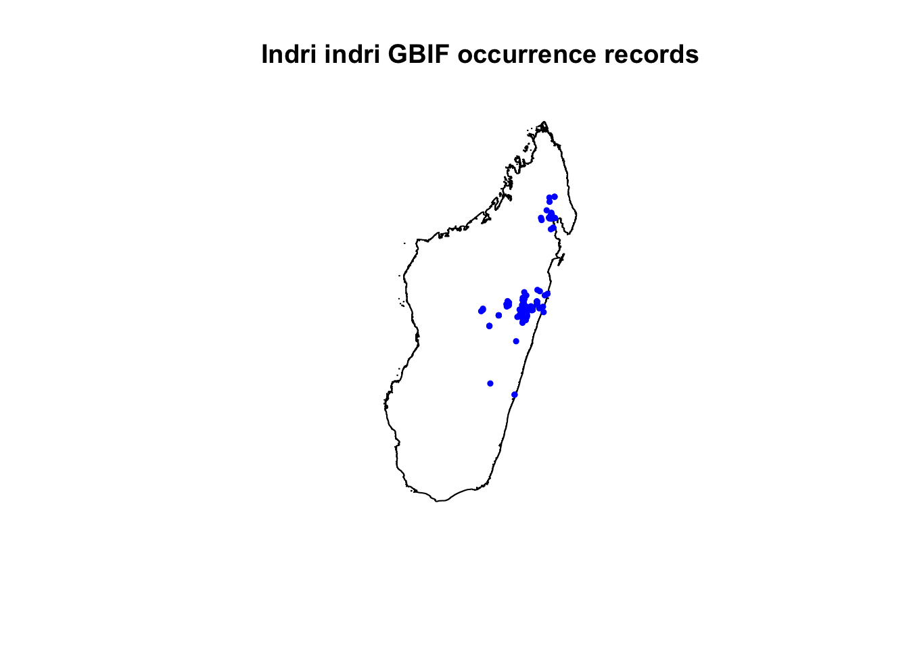

Lab 7: Open Data
In this lab, the focus is on open access data (a.k.a. publicly available data). Open access data is vital to moving science forward - both in terms of advancing basic science but also applied science. Open data is also essential to be able to make decisions based on the “best available science” including informing policy and management.
In Lab 1, you were introduced to the FAIR Data Principles; the idea that data should be Findable, Accessible, Interoperable, and Reusable (FAIR). Wilkinson et al. (2016) outlines these standards.
Wilkinson, M. D., M. Dumontier, Ij. J. Aalbersberg, G. Appleton, M. Axton, A. Baak, N. Blomberg, J.-W. Boiten, L. B. da Silva Santos, P. E. Bourne, J. Bouwman, A. J. Brookes, T. Clark, M. Crosas, I. Dillo, O. Dumon, S. Edmunds, C. T. Evelo, R. Finkers, A. Gonzalez-Beltran, A. J. G. Gray, P. Groth, C. Goble, J. S. Grethe, J. Heringa, P. A. C. ’t Hoen, R. Hooft, T. Kuhn, R. Kok, J. Kok, S. J. Lusher, M. E. Martone, A. Mons, A. L. Packer, B. Persson, P. Rocca-Serra, M. Roos, R. van Schaik, S.-A. Sansone, E. Schultes, T. Sengstag, T. Slater, G. Strawn, M. A. Swertz, M. Thompson, J. van der Lei, E. van Mulligen, J. Velterop, A. Waagmeester, P. Wittenburg, K. Wolstencroft, J. Zhao, and B. Mons. 2016. The FAIR Guiding Principles for scientific data management and stewardship. Scientific Data 3:160018. DOI:10.1038/sdata.2016.18.
Please review these principles as you will need to address them in your write-up. You can also review the FAIR Principles at this website: https://www.go-fair.org/fair-principles/
Open Data Summary:
For this lab assignment, you will summarize a publicly available spatially-explicit dataset (i.e., data are geographically referenced) using the RMarkdown template below. I suggest you find a dataset related to your graduate work and planned paper for the course as this will help you explore potential data for your analyses. You will need to hand in a PDF or HTML produced from R Markdown, including any images, plots, code, and text for answers to the questions.
The following open access datasets have already been summarized, so find a different open access dataset.
MTBS, DNR Forest Cover (IFMAP), National Phenology Network, Historical DNR Forest Cover, NAWQA, North American Breeding Bird Survey, PRISM Climate Data, National Oceanic and Atmospheric Administration (NOAA) Climate Data, GBIF spatial occurrences, MEaSUReS 25km resolution snow cover data, Ocean Biogeographic Information System (OBIS), The National Land Cover Database (NLCD), Terra MODIS Vegetation Continuous Fields (VCF), WorldClim climate data.
If you’re stuck on selecting a dataset, try searching global, national, and state-level data repositories like these (which each contain numerous spatially referenced datasets):
https://edg.epa.gov/metadata/catalog/main/home.page
https://gis-michigan.opendata.arcgis.com/
https://www.usgs.gov/products/data-and-tools/gis-data
https://portal.edirepository.org/nis/home.jsp
Follow the R markdown template below to include the following:
The category of data
A short description of the data (range of spatial grain & extent, the range of temporal grain & extent) - more detail than is in the example below
A link to the data online
Linked data logo if applicable
Data use policy link
How do these data align with the FAIR Data Principles? In a few sentences, evaluate how well these data meet the Findable, Accessible, Interoperable, and Reusable (FAIR) Principles.
Include suggestions of R packages to use when importing these data, and any code that is necessary to import them. If it is not possible to use R code to import data directly (e.g., as we did with the gbif data), include a link to the host site’s directions for uploading these data, and a brief description of how they can be uploaded. Also include a small image of some of these data (a map you create including scalebar, axes, legend, and north arrow, or a screen shot from the website showing the map is fine).
The example template below is for GBIF species occurrence data. Lemurs happen to be my absolute favorite animal and I was lucky enough to travel to Madagascar to see several species in 2010. Hence, the template below for gbif uses the largest living lemur, Indri indri, as an example species occurrence dataset. GBIF is the example shown here; you cannot submit your open dataset as GBIF.
Example Tamplate for GBIF: Global Biodiversity Information Facility
1. Data Category: Species Occurrences
2. Data Description: GBIF is the Global Biodiversity Information Facility which provides free and open access to biodiversity data. Spatial and temporal scale of occurrences varies, depending on the species of interest.
3. Data Link: http://www.gbif.org/
4. Image/icon/logo for these data

GBIF Logo
5. Data Use Policy: http://www.gbif.org/using-data/summary
6. How these Data align with the FAIR Data Principles [Insert a few sentences evaluating how well these data meet the Findable, Accessible, Interoperable, and Reusable (FAIR) Principles]
7. Use with R: GBIF data on species occurrences can be downloaded directly for certain species by using the R package “dismo”, as shown below for Indri indri (the largest living lemur). For use with software other than R, select different filters to download occurrence data here: http://www.gbif.org/occurrence/search.

Indri (Indri indri), Analamazaotra Special Reserve, Madagascar. Charles J Sharp 2018.
library(dismo) # package to easily download gbif occurrence data
library(raster)
library(sp)
library(jsonlite)
indri.gbif <- gbif("Indri", "indri", geo=T) # plot occurrences## 2210 records found## 0-300-600-900-1200-1500-1800-2100-2210 records downloaded# higher resolution country outline: getData using raster package. Also see: http://www.gadm.org/
mada<-getData("GADM",country="MDG",level=0)
plot(mada, main="Indri indri GBIF occurrence records")
points(indri.gbif$lon,indri.gbif$lat,pch=19, cex=0.5, col="blue")
# Continue plotting to add a north arrow, scalebar, and axes for the plot.
This work is licensed under a Licensed under CC-BY 4.0 2020 by Phoebe Zarnetske.